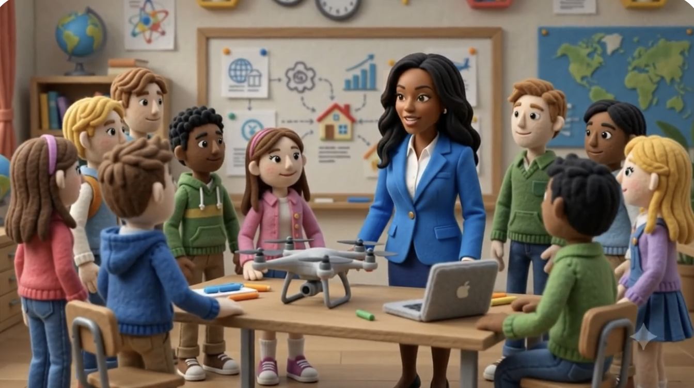
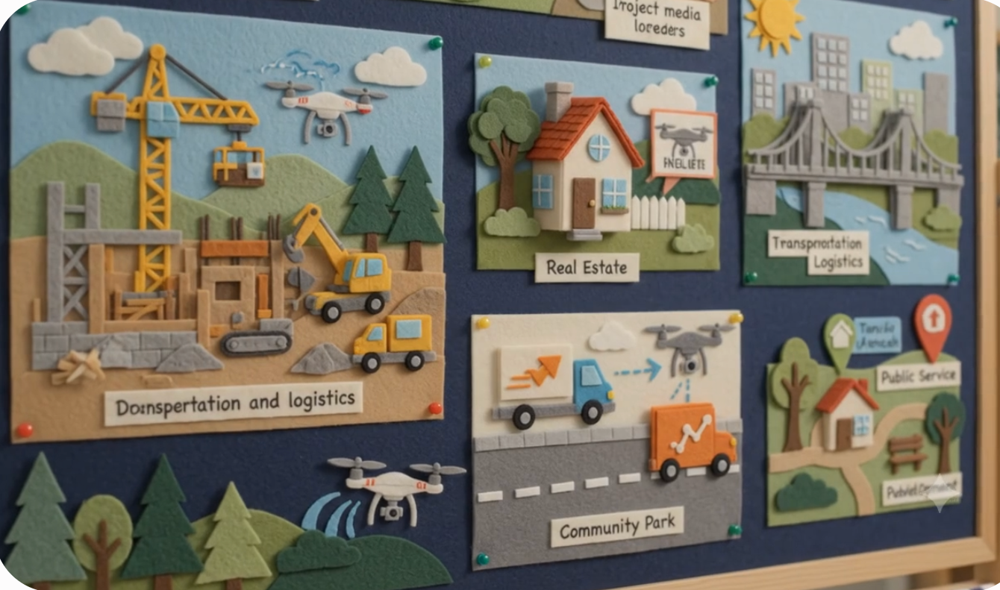

K–12 Education & Future Ready AI
I help schools and districts build responsible AI literacy, educator confidence, technology readiness, instructional leadership, and career-connected learning.
Services for Schools & Districts
Practical, hands-on training that builds educator confidence with AI in the classroom.
Assessing infrastructure, tools, and staff capacity against the School AI Readiness Framework.
Age-appropriate Future Ready AI curriculum, lessons, and project-based learning experiences.
Building school and district leadership capacity to guide responsible AI adoption.
A practical 90-day starting plan — listen and assess, prepare and design, pilot and learn.
Student privacy, equity, accessibility, and human oversight built into every recommendation.
Future Ready AI Curriculum
Future Ready AI provides a connected K–12 pathway that helps students understand artificial intelligence, use it responsibly, evaluate its outputs, create thoughtfully, and connect emerging technology to real-world learning and careers. Human judgment, student creativity, responsible use, and age-appropriate learning remain central across every grade band.
Andrea introduces the Future Ready AI pathway — AI Discoverers, AI Explorers, and AI Innovators.
Curiosity, patterns, human-versus-machine thinking, safe technology use, and foundational digital citizenship.
How AI works, prompting, media literacy, bias, privacy, collaboration, and responsible creation.
Applied AI literacy, ethics, career exploration, innovation, and real-world problem-solving.
The Six Future Ready AI Curriculum Pillars
AI Foundations
Understanding what AI is, how it works, where it appears, and what its limitations are.
Creativity & Innovation
Using AI thoughtfully to support inquiry, design, communication, and problem-solving.
Responsible & Ethical AI
Examining privacy, bias, fairness, transparency, accountability, and human judgment.
Prompting & Communication
Learning how questions, instructions, context, and revision influence AI outputs.
Critical Thinking & Media Literacy
Evaluating accuracy, recognizing manipulation, and identifying missing perspectives.
Digital Citizenship & Future Readiness
Building responsible technology habits while exploring careers and emerging opportunities.
Featured Resources
A practical guide for launching age-appropriate, responsible, human-centered AI learning — the Six Pillars, a developmental K–12 pathway, the School AI Readiness Framework, and a 90-day starting plan.
The complete K–12 curriculum framework — six pillars, the Future Ready AI Learning Cycle, and grade-band scope and sequence for AI Discoverers, AI Explorers, and AI Innovators.
A reusable lesson-planning format built around the Future Ready AI Learning Cycle — Launch, Explore, Explain, Create, Reflect, Extend — with a built-in quality-review checklist.
A classroom-ready elementary sample lesson where students explore patterns, classification, and why human judgment matters when machines group information.
Career-Connected Learning
Workforce Development
Career exploration and workforce-readiness skills built into age-appropriate AI learning.
Drone Curriculum
Aerial imaging, mission planning, and responsible drone use through the Drone Innovation Lab.
Emerging Technology
Hands-on exposure to the technologies reshaping tomorrow's industries.
Entrepreneurship
Responsible, AI-enabled business thinking woven into high-school career pathways.
Project-Based Learning
Authentic challenges — from capstone innovation projects to responsible drone missions.
Selected K–12 Media
A selection of videos and photos from the Future Ready AI curriculum site, showing each grade-band pathway.
Elementary learners explore where AI appears in everyday life while building curiosity and safe technology habits.
Middle-school learners strengthen prompting, source-checking, privacy protection, and recognizing bias.
High-school learners explore advanced AI literacy, ethics, research, and career pathways.
Featured Career Pathway
Aerial imaging, mission planning, and responsible drone use — connecting classroom learning to construction, real estate, transportation, and infrastructure careers.
Students explore flight safety, mission planning, aerial imaging, and responsible technology use.
Students apply mission planning, aerial-image review, and teamwork through hands-on drone learning.
Students connect drone technology and AI to construction, real estate, and other emerging careers.

Teacher and students reviewing flight data together in the Drone Innovation Lab.

Drone applications across construction, real estate, transportation, infrastructure, and public service.
Full Future Ready AI Site — In Development. The full Future Ready AI curriculum site is currently in development. Additional curriculum pathways, interactive tools, videos, and implementation resources will be added as they are completed.
In DevelopmentWays to Work Together
Let’s Connect
I welcome opportunities to partner with schools and districts ready to begin — or continue — their K–12 AI literacy journey.